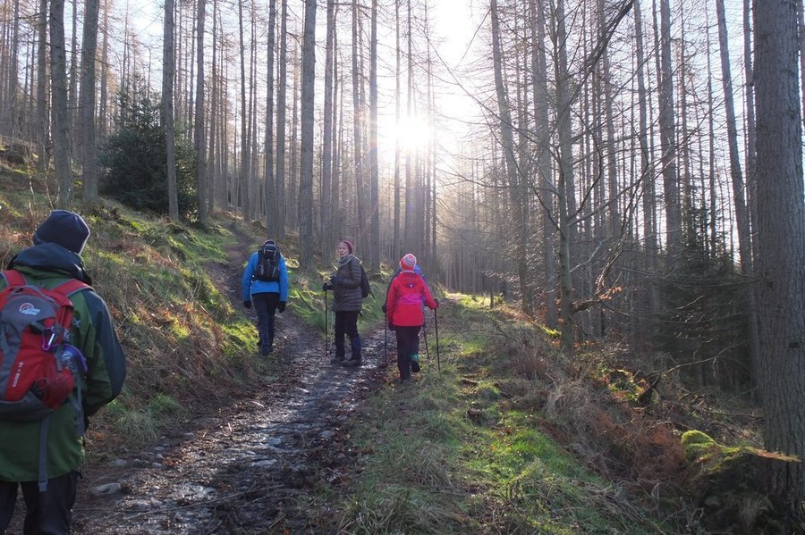

Procedural Memory Explained: Why You Never Forget How to Ride a Bike
You can forget a phone number in seconds but still ride a bike after twenty years off one. That's not a coincidence. It's a completely different memory system doing the work.

Photo: Jim Barton / Wikimedia Commons / CC BY-SA 2.0
Key takeaways
- Procedural memory is skill memory: riding a bike, typing, driving, tying knots. It's learned through repetition and runs mostly without conscious thought.
- It's stored differently than facts or events. The basal ganglia and cerebellum do most of the work, not the hippocampus.
- It's unusually durable. Old, well-practiced skills often survive brain injury or early dementia that damages other kinds of memory.
- Sleep helps lock it in. Practicing a new physical skill and then sleeping on it improves performance more than practice alone.
- Spaced practice beats cramming for building any new motor or procedural skill.
Try to picture the last time you rode a bike, laced up a pair of shoes, or drove your usual route home. Odds are you weren't thinking through the steps. Your hands and feet just knew what to do. That's procedural memory, one of the oldest and most reliable systems the brain has for holding onto information, even though most people have never heard the term. Here's what it actually is, why it behaves so differently from remembering a name or a date, and what that means if you're trying to pick up a new skill.
What exactly is procedural memory?
Procedural memory is the memory for how to perform actions and skills. It covers physical skills like riding a bike or swimming, but also less obviously physical ones, like touch-typing, reading, or the sequence of steps in a familiar recipe you no longer need to look up. Psychologists group it under implicit memory, meaning you can use it without consciously recalling how you learned it. Ask an experienced driver to describe, step by step, exactly how they merge onto a highway and you'll often get a halting, incomplete answer, even though they merge onto highways just fine. The knowledge is real. It's just not stored in a form built for verbal explanation.
How is that different from other kinds of memory?
Memory researchers generally split long-term memory into two broad categories. Declarative memory covers facts and events, things you can consciously state, like a birthday or what you had for lunch. Procedural memory sits in the other category, called non-declarative or implicit memory, alongside things like simple conditioning. The practical difference shows up constantly. You can describe a fact you barely remember in a single sentence. Describing a well-learned physical skill in words, on the other hand, is often clumsy and incomplete, even when the performance itself is flawless.
Where does procedural memory actually live in the brain?
Declarative memory depends heavily on the hippocampus, a structure that's essential for forming new factual and event memories. Procedural memory takes a different route. The basal ganglia, a cluster of structures involved in movement and habit formation, and the cerebellum, which fine-tunes motor coordination and timing, do most of the heavy lifting, working together with the motor cortex as a skill becomes automatic. This isn't a minor technical detail. It's the reason procedural and declarative memory can be damaged independently of each other, something neuroscience has documented in patients with very specific, localized brain injuries.
COMPLEX
The memory formula we rate highest in 2026
One formula combined a fully transparent, clinically-dosed label, citicoline, bacopa, phosphatidylserine and B-vitamins, with a 60-day guarantee.
See Today's Price →Why does procedural memory survive when other memory fades?
One of the more striking, well-documented patterns in dementia care is how long procedural skills can hang on. Early-to-moderate Alzheimer's disease primarily damages the hippocampus and nearby regions first, the same structures declarative memory depends on. That's why someone in the early stages might struggle to recall a conversation from an hour ago while still being able to play a piece of music they learned decades earlier, set a table, or fold laundry the way they always have. It isn't a rule without exceptions, and it doesn't hold at every stage of every condition. But the general pattern, procedural memory being more resistant than declarative memory to early hippocampal damage, is consistent enough that it shapes how caregivers and therapists approach activities for people with dementia. If this touches your own family, our guide on memory loss vs. normal aging is a reasonable next stop.
Can procedural memory be damaged too?
Yes, just through a different route. Conditions that affect the basal ganglia or cerebellum, such as Parkinson's disease or certain kinds of cerebellar damage, can impair the learning or execution of new motor skills even when someone's ability to form new factual memories is unaffected. There's also a famous case in memory research, a patient known by the initials H.M., who lost the ability to form new declarative memories after brain surgery in the 1950s but could still learn new motor skills, like tracing a shape in a mirror, and retain that improvement day after day, despite having no conscious memory of ever practicing it. That single case did more than almost anything else to convince researchers that procedural and declarative memory are genuinely separate systems.
How do you build procedural memory faster?
Two things matter more than most people expect: spacing and sleep. Spreading practice across several shorter sessions, rather than one long one, consistently produces better long-term retention of a new skill in motor-learning research. Sleep plays an active role too, not just a passive one. Studies on motor sequence learning have found that people often perform a practiced sequence measurably better after a night's sleep than they did right at the end of practice, with no extra rehearsal in between. The brain appears to keep refining a new skill while you're asleep. If you're working on something like an instrument, a sport, or a new language's pronunciation, treating rest as part of the training, not a break from it, is a genuinely useful mental shift.
Does procedural memory ever get "used up" or need refreshing?
Well-learned procedural skills are remarkably stable, but they aren't immune to time entirely. Fine motor precision can drift without practice, which is why a rusty former athlete or musician often needs a short reacquaintance period rather than a full relearning process. That's a meaningfully different experience from learning a skill for the first time. It's closer to remembering a language you studied years ago: slower at first, then quick to come back. If you're curious how procedural memory fits alongside working memory and other everyday memory systems, see our explainer on what working memory is and why it matters after 40.
Frequently asked questions
What is procedural memory in simple terms?
Procedural memory is the memory for how to do things: riding a bike, typing, tying your shoes, driving a familiar route. It's built through repetition, it operates mostly without conscious thought once learned, and it's a different system from the memory you use to recall facts or personal events.
Where is procedural memory stored in the brain?
Procedural memory relies heavily on the basal ganglia and the cerebellum, along with parts of the motor cortex, rather than the hippocampus, which is more central to forming new factual and event memories. That's a large part of why the two systems can be affected very differently by injury or disease.
Why does procedural memory often survive when other memory fades?
Because it depends on different brain structures. In conditions like early-to-moderate Alzheimer's disease, which primarily damages the hippocampus and surrounding regions first, skills learned long ago, like playing a familiar song or riding a bike, often remain relatively intact even as forming new memories becomes difficult. This pattern is well documented in the clinical literature, though it varies by person and by how far the disease has progressed.
How can you build procedural memory faster?
Spaced, repeated practice beats cramming a skill into one long session. Sleep matters too. Research on motor learning has repeatedly found that a night of sleep after practicing a new physical skill helps consolidate it, sometimes producing measurable improvement the next day without any additional practice.
Memory isn't just one system
Procedural memory runs on repetition and rest. Whatever kind of memory you're trying to support day to day, see the memory formulas our editors rate highest for 2026.
See the Top 5 Memory Formulas →Related: What is working memory · The memory palace technique · How to improve memory · Best memory formulas of 2026